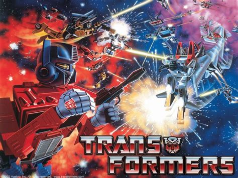
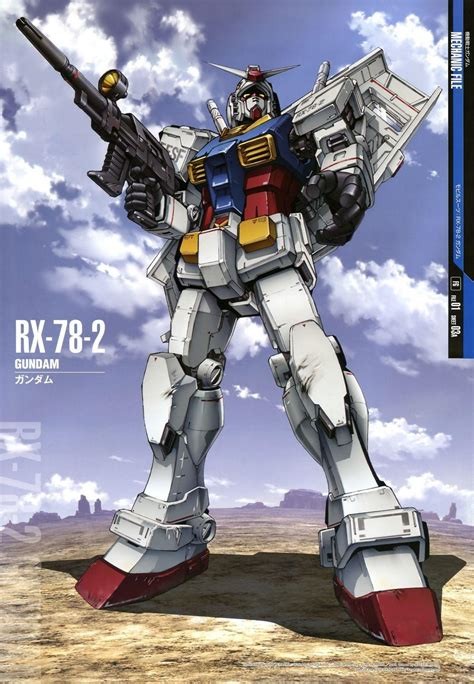
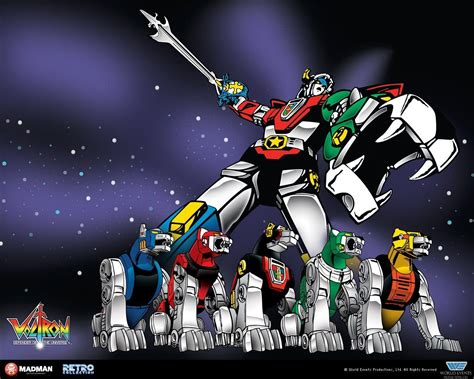
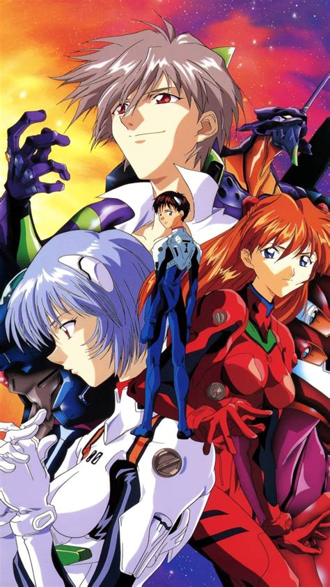

My mecha hyperfixation
So as I've mention in my about me I am really into giant robots in media and I mean Really into it, I am seriously obessed with them like I can't think of a way to explain it properly I just love the whole genre espcially all the transforming ones like my god, So to show how much I like this genre here's a list of the series/franchises that I've watch and into
-
Brave series
 This was a collabration between Takara and Sunrise during the 90's that was about transforming robots that fought against evil beings along with some help from their human child allies and had a theming on bravery and a focused on combinations. It first started in 1990 with Exkaiser and ended with the ova GaoGaiGar Final with eight entries, two ovas, and two other shows that are said to be apart of the same world as the eighth entry.
This was a collabration between Takara and Sunrise during the 90's that was about transforming robots that fought against evil beings along with some help from their human child allies and had a theming on bravery and a focused on combinations. It first started in 1990 with Exkaiser and ended with the ova GaoGaiGar Final with eight entries, two ovas, and two other shows that are said to be apart of the same world as the eighth entry.
-
Transformers

So this is also a series that's about transforming robots one side who works with humans that Takara also has a hand in so yeah. But seriously though transformers is a franchise that I do love ever since I was a child. Beginning all the way back in 1984 Transformers has always been a franchise that has had countless stories about the war between the autobots and decepticons through multiple interations like Beast Wars, the Unicron Trilogy, the movies, comics, Animated, video games, and of course all the toys that have been released over the years with such fond and memorable characters like Optimus Prime, Megatron, Bumblebee, Starscream, the Dinobots, Soundwave, Wheeljack, the Constructicons, and many Many more, it is something to be apprechiated about even with all the issues that is happening with the franchise that you or anyone else may have at the time of reading this blog. -
Gundam

Gundam is a series about people being force to pilot giant robots to fight in conflicts they never wish to not be apart of (yeah this is one of those franchises). Gundam is very pollitical with it's messaging at times espcially it's usual war is bad ones but it does have good stories, good animations, good characters and I do enjoy building a model kit of one of the mechas from it at times so yeah I said I enjoy it. -
Getter robo
 Getter robo is about three violent people working together by piloting three jet like machines that can crash into each other to combine and form one of three types of robots. So you can kinda tell what this one is like from the description of it that I wrote getter is in my oppinion a very fun franchise to engage in with lots of action, cool looking monsters for the trio to fight in the getter with and an interesting evolution into a bit of cosmic horror kind of, yeah.
Getter robo is about three violent people working together by piloting three jet like machines that can crash into each other to combine and form one of three types of robots. So you can kinda tell what this one is like from the description of it that I wrote getter is in my oppinion a very fun franchise to engage in with lots of action, cool looking monsters for the trio to fight in the getter with and an interesting evolution into a bit of cosmic horror kind of, yeah.
-
Voltron

This is another franchise that I grew up with that was also started all the way back in the 1980's. So this one is very much like a super sentai/power rangers season (actually it might be the reason why I'm into power rangers so much now that I think about it) so if you're familiar with either of those series than you might know what you're getting into with this one, a team of heroes (Five of them to be exact) pilot five giant mechanical lions that can combine to form voltron to fight against evil space monsters it's as basic as it can get but that dosen't means it's bad the franchise has had it ups and espcially Big downs but it's still something that I do like. -
Metal cardbot
 Metal cardbot is a korean toyline of transforming robots with the gimmick of the metal cards which can become accessories for the cardbots to use. Again this one is simple the story of it is essentialy transformers but all of them are like pokemon meaning that the cardbots themselves are typicaly capture before joining our main characters team and becoming friends, the toys from the only two that I've handled so far are decently fun and the story again while simple it isn't bad so it get a pass into my favorites from me.
Metal cardbot is a korean toyline of transforming robots with the gimmick of the metal cards which can become accessories for the cardbots to use. Again this one is simple the story of it is essentialy transformers but all of them are like pokemon meaning that the cardbots themselves are typicaly capture before joining our main characters team and becoming friends, the toys from the only two that I've handled so far are decently fun and the story again while simple it isn't bad so it get a pass into my favorites from me.
-
Evangelion

So you know that one Simpsons scene where the kids let the test screening guy know that they would like a down to earth show that's also totally off the walls and swarming with magic robots? Cause that's litterally what Evangelion is a franchise about people dealing with mental health struggles all while fighting angels by piloting giant artifical human beings with the souls of someone close to them in their engines, and don't even get me started on the lore and everything like, I like the show, I like the movies, I think it's interesting and thought provoking franchise, but even as a fan I can tell you it's something. -
Gurren Lagann
 Gurren Lagann is a show about manhood, fighting spirit, and destiny. So this one is full of action, and it does take some obvious inspirations from other franchises (like getter), it has a great cast of characters and honsetly the story of like a guy who started out as a drilling caveboy then become like the man who saved the universe from being nothing yeah I like it.
Gurren Lagann is a show about manhood, fighting spirit, and destiny. So this one is full of action, and it does take some obvious inspirations from other franchises (like getter), it has a great cast of characters and honsetly the story of like a guy who started out as a drilling caveboy then become like the man who saved the universe from being nothing yeah I like it.
 Kamen Rider is a series about masked motorcycle riding heroes that fight against evil human size and shaped monsters called kaijin, produced by toei the series has been around since 1971 and it continues to this day with the most recent entry at the time of writing this Kamen Rider My-th (pronouced as mice) having just started airing on japanese television and internationally on youtube. Each rider uses a device called a driver a belt they would wear around their waist, or in the two most recent entries across their upper body, outside of showa riders they would typically insert something in the buckle of the driver which would then activate their transformation (or henshin if you will) into their rider form. Ultimatly though I've been enjoying what I've seen of this franchise so far and I really do want and hope to see more of it
Kamen Rider is a series about masked motorcycle riding heroes that fight against evil human size and shaped monsters called kaijin, produced by toei the series has been around since 1971 and it continues to this day with the most recent entry at the time of writing this Kamen Rider My-th (pronouced as mice) having just started airing on japanese television and internationally on youtube. Each rider uses a device called a driver a belt they would wear around their waist, or in the two most recent entries across their upper body, outside of showa riders they would typically insert something in the buckle of the driver which would then activate their transformation (or henshin if you will) into their rider form. Ultimatly though I've been enjoying what I've seen of this franchise so far and I really do want and hope to see more of it
 So to get this out of the way Sentai is a series also produced by toei that has been around since 1975 and is about a team of heroes that fight monsters that would be sent by an evil force or organization that would sometimes grow into a giant leading the team to need to pilot a giant robot in order for them to finish the job, saban would take footage and costume from sentai years later to create the Power Rangers in 1993. Now I did grew up with Power Rangers when I was a kid and I did recently watch a bit of KyuKyu Sentai gogov before shout factory lost the license to sentai but just note that while Power Rangers and Sentai are usally talk about/consinder two seperate franchises they are interlinked with each other in some way, and while both of them has recently ended with Sentai having it spirit lived on through project red and Power Rangers essentially well being on it's death bed at this point I still do like these franchises mainly one over the other considering that I've only watched on entry of the other but I still like them non the less.
So to get this out of the way Sentai is a series also produced by toei that has been around since 1975 and is about a team of heroes that fight monsters that would be sent by an evil force or organization that would sometimes grow into a giant leading the team to need to pilot a giant robot in order for them to finish the job, saban would take footage and costume from sentai years later to create the Power Rangers in 1993. Now I did grew up with Power Rangers when I was a kid and I did recently watch a bit of KyuKyu Sentai gogov before shout factory lost the license to sentai but just note that while Power Rangers and Sentai are usally talk about/consinder two seperate franchises they are interlinked with each other in some way, and while both of them has recently ended with Sentai having it spirit lived on through project red and Power Rangers essentially well being on it's death bed at this point I still do like these franchises mainly one over the other considering that I've only watched on entry of the other but I still like them non the less.